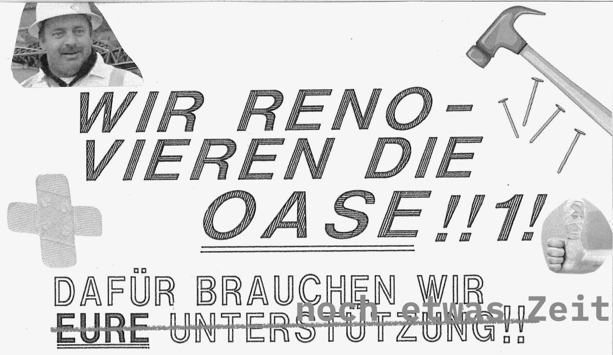

NEIN
Die Lernräume im 6. OG sind aktuell geschlossen.
Die öffentlichen Lernräume sowie die Bibliothek im 6. OG können derzeit unter Beachtung des
aktuellen Hygienekonzepts
genutzt werden.

Die Oase ist aktuell im Bauzustand, sobald sich das ändert, findet ihr es raus.
Impressum